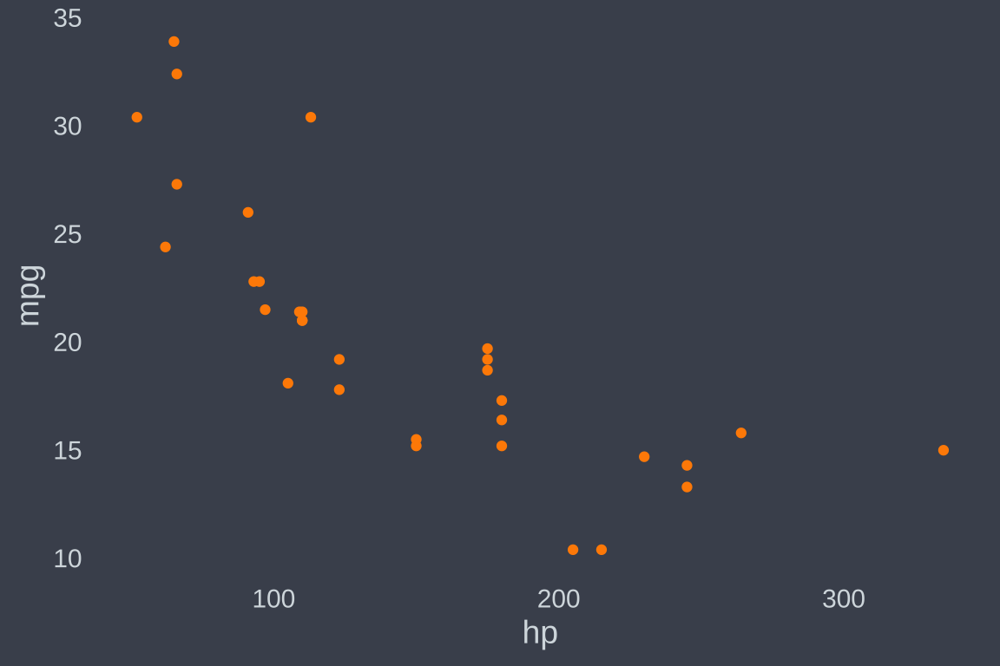
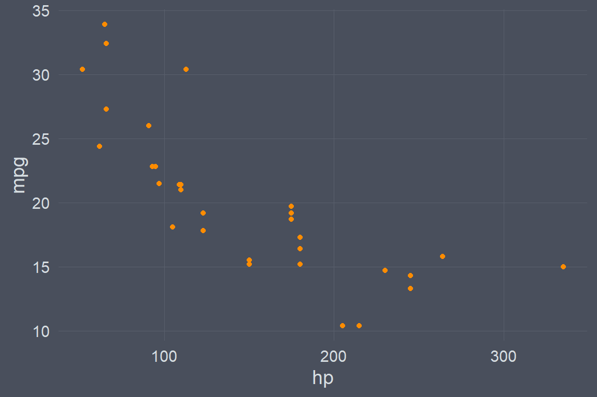
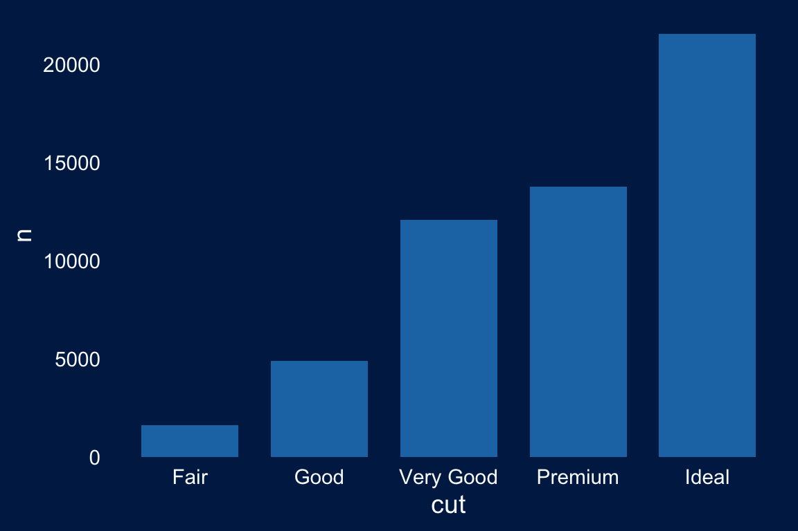
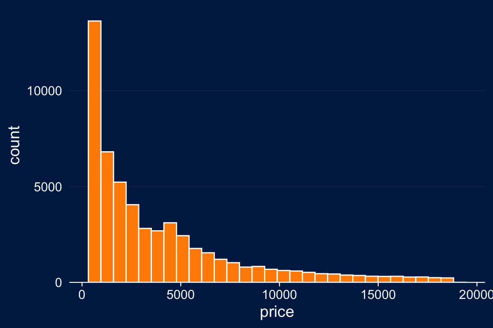
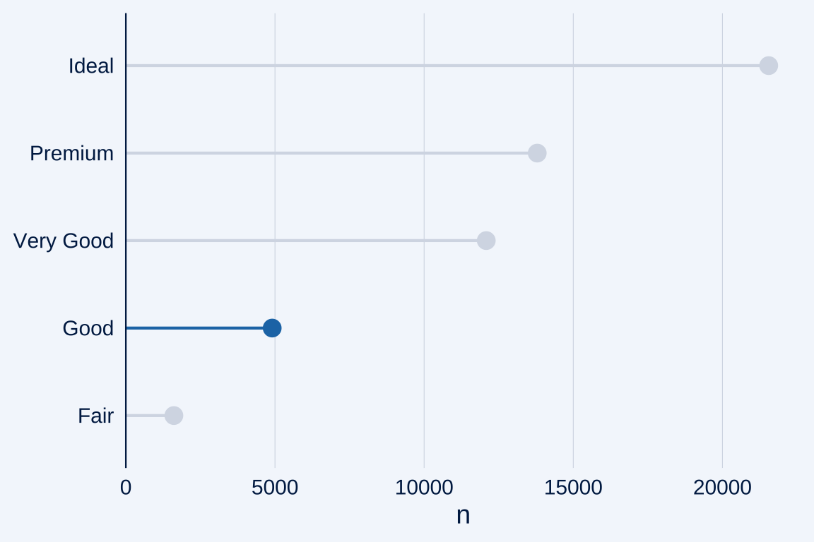
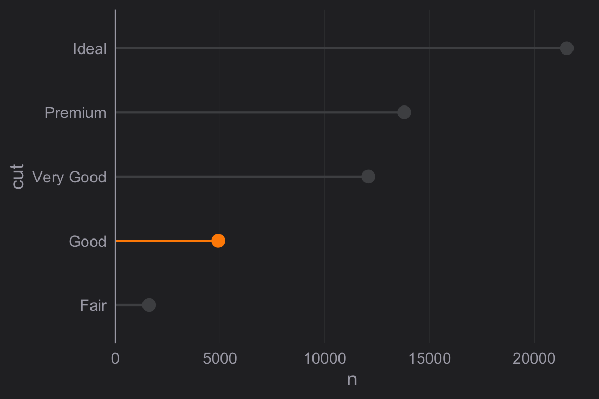
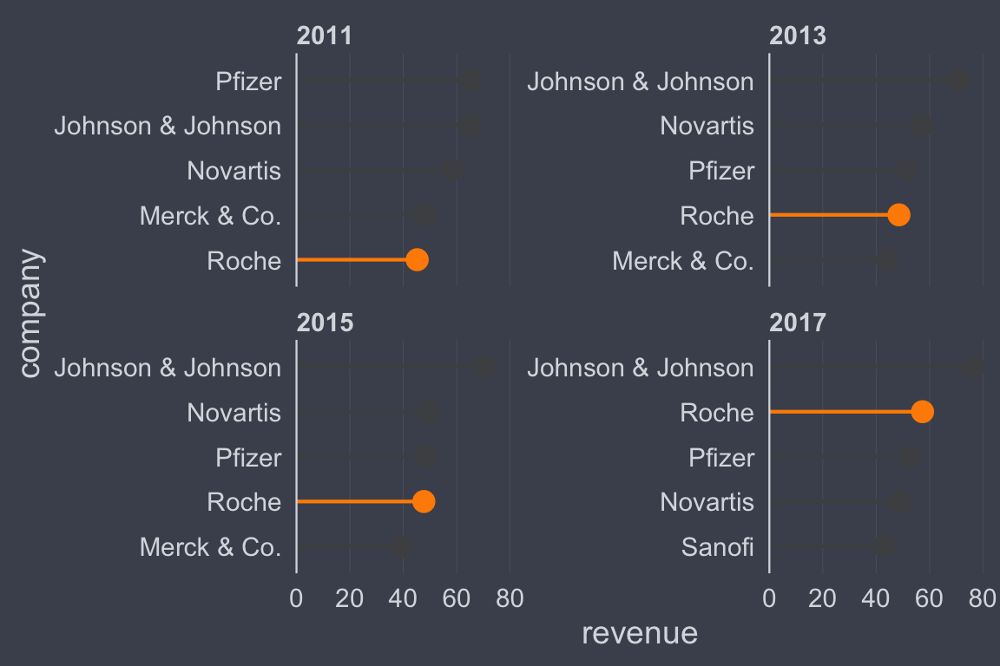
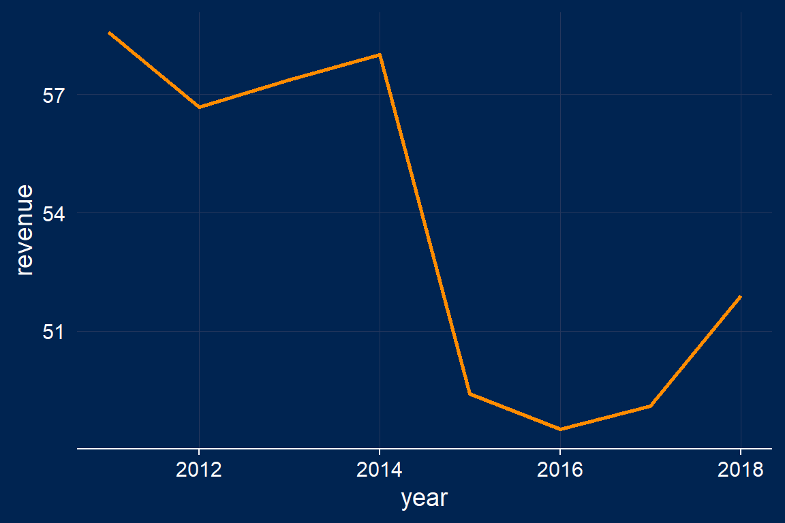

Introduction
ggcharts offers a couple of highly customizable ggplot2 themes. When you don’t specify any arguments all themes are very minimal. They don’t have any axis lines, axis ticks and grid lines. This is intentional. Depending on the chart you create different combinations of these parameters work best. You should carefully choose them on your own rather than using some arbitrary default. Let’s illustrate this with theme_hermit().
Usage
With ggplot2
scatter <- ggplot(mtcars, aes(hp, mpg)) + geom_point(color = "darkorange") scatter + theme_hermit()

As promised, this is very minimal. If you like that look feel free to leave it like this otherwise customize it for your needs. For this scatter plot you might choose to have axis lines and ticks. This can easily be achieved.
scatter + theme_hermit(axis = "xy", ticks = "xy")

Alternatively, you may want to use grid lines.
scatter + theme_hermit(grid = "XY")

Notice that I used uppercase "XY" which will draw major grid lines. For minor grid lines use lowercase "xy" and for a combination use "XYxy".
Next, let’s have a look at a histogram example.
hist <- ggplot(diamonds, aes(price)) + geom_histogram(fill = "darkorange", color = "white") + scale_y_continuous(expand = expand_scale(mult = c(0, .05))) hist + theme_nightblue()

For this chart the minimal default doesn’t look too bad but you might want to add horizontal grid lines.
hist + theme_nightblue(grid = "X")

Additionally you may want to add an x axis line and ticks.
hist + theme_nightblue(grid = "X", axis = "x", ticks = "x")

With ggcharts
ggcharts uses theme_ggcharts() by default and sets the axis, tick and grid arguments automatically depending on the plot. You can change the theme by using ggcharts_set_theme().
lollipop_chart(diamonds, cut, highlight = "Good")

ggcharts_set_theme("theme_ng") lollipop_chart(diamonds, cut, highlight = "Good")

The advantage of using ggcharts_set_theme() over adding the theme to a ggcharts plot is two-fold. First, as already mentioned the theme arguments are set automatically. Second, the default color used for the geom is changed. Finally, the color of the non-highlighted bars/lollipops is determined automatically from the theme background.
Gallery
theme_ggcharts
This is the default theme of ggcharts.
scatter + theme_ggcharts(axis = "xy")

hist + theme_ggcharts(axis = "x", grid = "X")

theme_hermit
spec <- highlight_spec("Roche", "yellow", "#7A7A7A") biomedicalrevenue %>% filter(year %in% c(2011, 2013, 2015, 2017)) %>% lollipop_chart(company, revenue, facet = year, highlight = spec, top_n = 5) + theme_hermit(axis = "y", grid = "Y")

theme_nightblue
biomedicalrevenue %>% filter(company == "Novartis") %>% ggplot(aes(year, revenue)) + geom_line(color = "darkorange", size = 1) + theme_nightblue(axis = "x", ticks = "x", grid = "XY")
